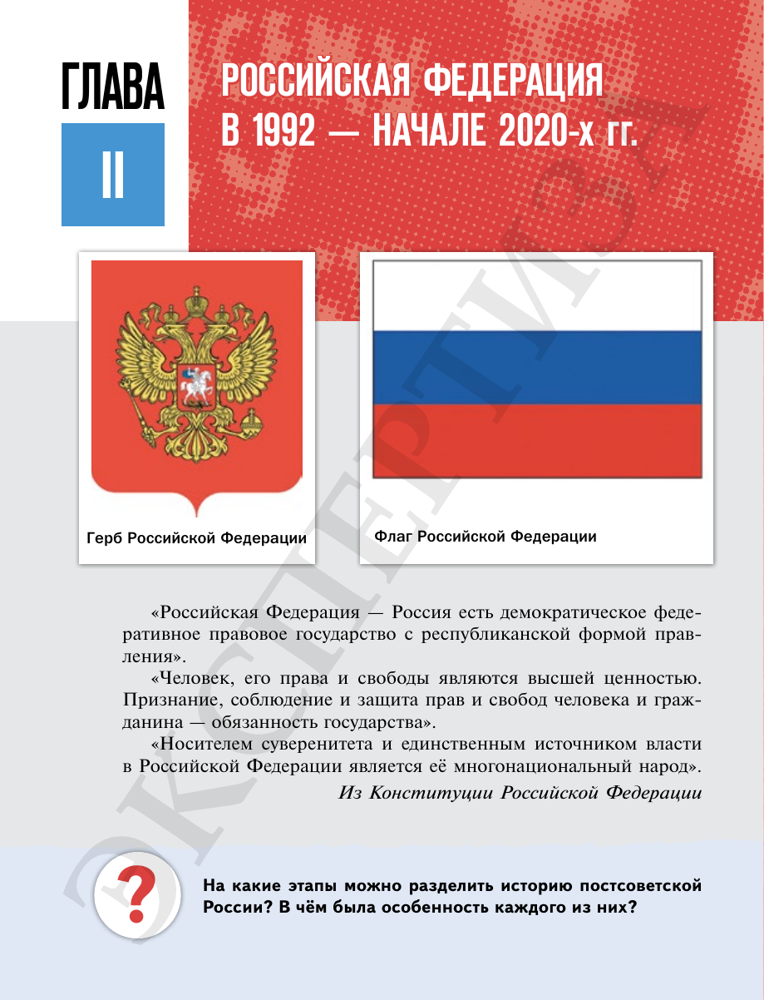

⌂
Мединский.нет
Последнее обновление: 16.08.2026 18:31
Мединский.нет
›
История России. 11 класс. Базовый уровень
›
Глава II. Российская Федерация в 1992 — начале 2020-х гг.
›
§ 24. Российская экономика в условиях рынка
›
стр. 278

← стр. 277
Оглавление
стр. 279 →
×